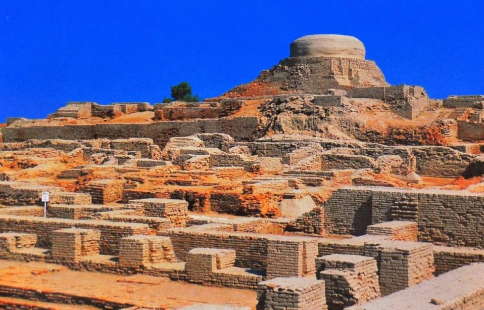
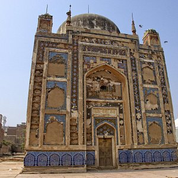
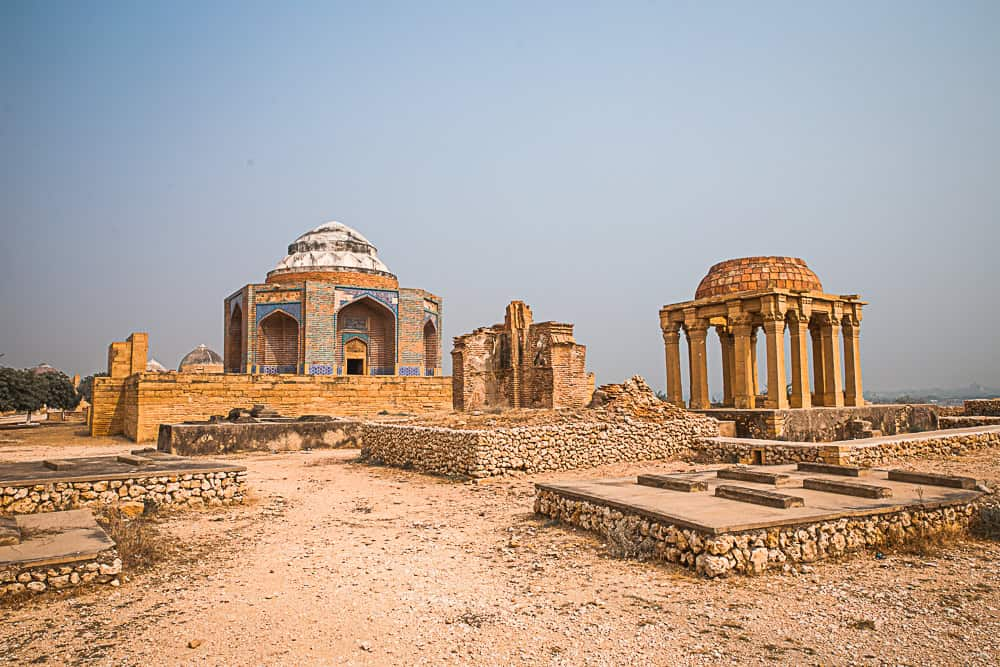
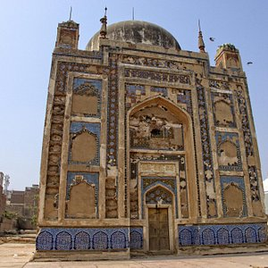
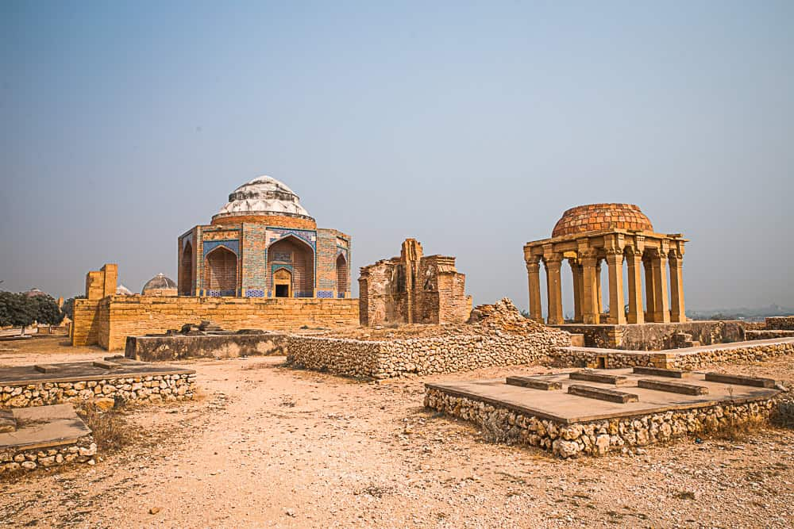

Sindh is Pakistan's southern province, home to the ancient Indus Valley Civilization including the 5,000-year-old ruins of Mohenjo-Daro.The region thrives along the Indus River with fertile farmlands, while its Thar Desert and Arabian Sea coast create striking natural contrasts.Karachi, Sindh's capital, serves as Pakistan's economic powerhouse and cultural melting pot with diverse communities.The province preserves unique traditions like Sufi music, Ajrak block-printing, and the Sindhi language, reflecting its rich heritage.

 


